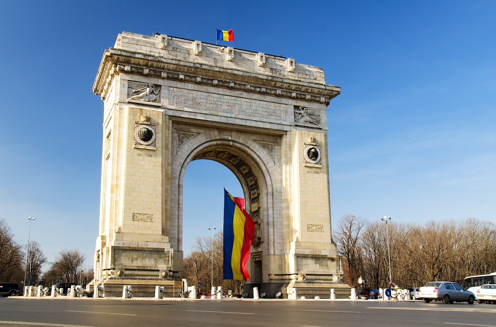
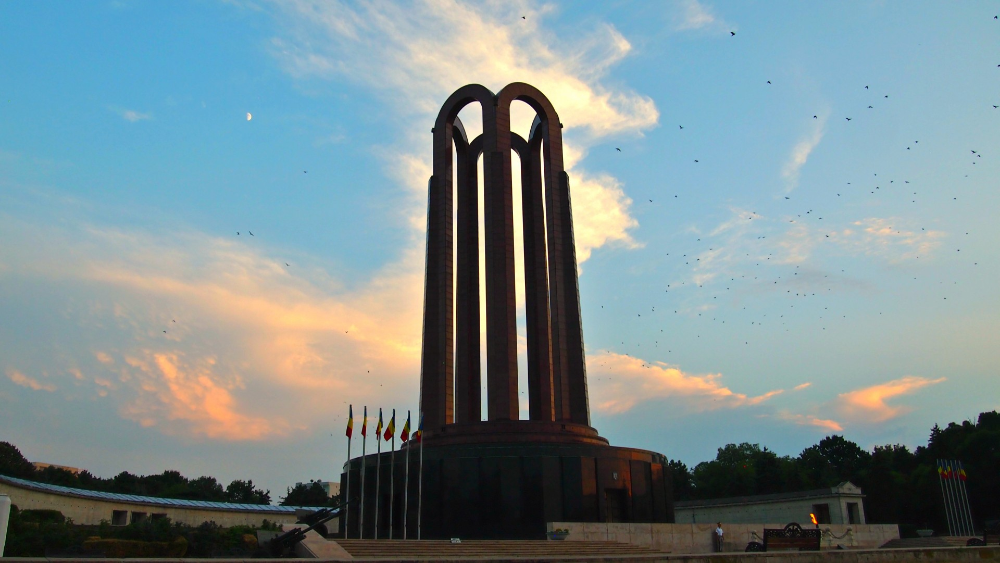
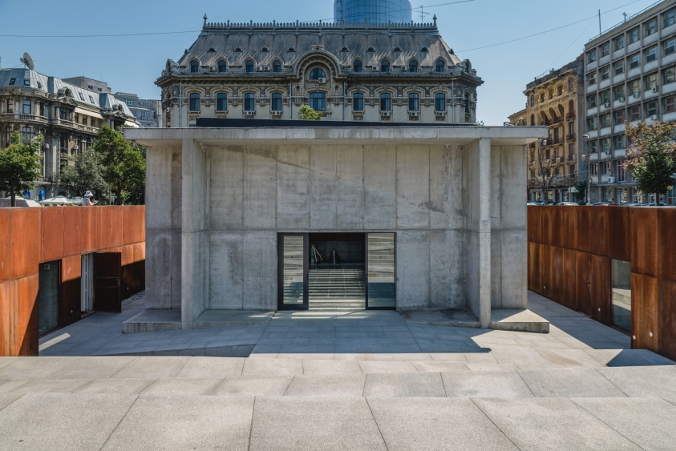

Monumente
- Arcul de Triumf
Având ca sursă de inspirație arcul din Paris, această structură a fost ridicată în perioada 1935-1936, cu scopul de a comemora formarea României Mari, un eveniment important din istoria țării, care a avut loc în 1918. Arcul de Triumf este așezat pe locul a două arcuri mai vechi: primul arc făcut din lemn și carton a fost înălțat în 1878 pentru a marca independența României față de Turcia, iar cel de-al doilea a fost ridicat în 1922, pentru a marca intrarea lui Ferdinand în București, ca prim rege al României Mari.
Arcul de Triumf din zilele noastre este construit din beton și granit. Pe o parte a acestuia, portretul Regelui Ferdinand și a Reginei Maria pot fi văzute și fotografiate. Pe cealaltă parte, sunt listate numele bătăliilor duse de români în timpul Primului Război Mondial.

- Mausoleul din Parcul Carol
Parcul Carol este vizitat zilnic de zeci de bucureșteni și turiști, dar oare câți dintre ei acordă atenție Mausoleului prezent acolo? Ridicat la jumătatea secolului trecut, Mausoleul are 48 de metri înălțime și a fost inaugurat la data de 30 decembrie 1963. Acest monument este format dintr-o bază circulară placată cu granit negru, deasupra căreia sunt amplasate 5 arcade înalte, placate cu granit roșu. O adevărată încântare pentru ochii oricărui turist!

- Memorialul Holocaustului
Una dintre cele mai căutate destinații turistice din București, Memorialul Holocaustului a fost realizat de Peter Jacobi cu scopul de a-i comemora pe cei peste 250.000 de evrei care și-au pierdut viața în urma deportării lor în Transnistria, în anul 1914. Este locul pe lângă care nu poți trece fără a citi numele victimelor acelei drame. Monumentul este o mărturie publică cu privire la un dezastru românesc acoperit cu tăcere de-a lungul anilor.

- Fântâna Zodiac
Realizată în stil Art Deco, pe această fântână sunt expuse cele 12 semne zodiacale circular, la baza sa. A fost concepută de arhitectul Octav Doicescu, iar mozaicurile negre pe fond cenușiu, care întruchipează zodiile, au fost realizate de sculptorul numit Mac Constantinescu. Acest monument a fost creată cu ocazia unei serbări care purta numele de „Luna Bucureștenilor”.